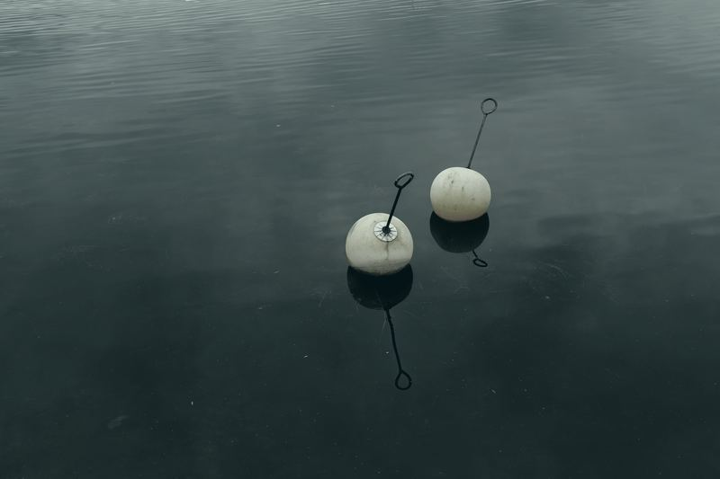
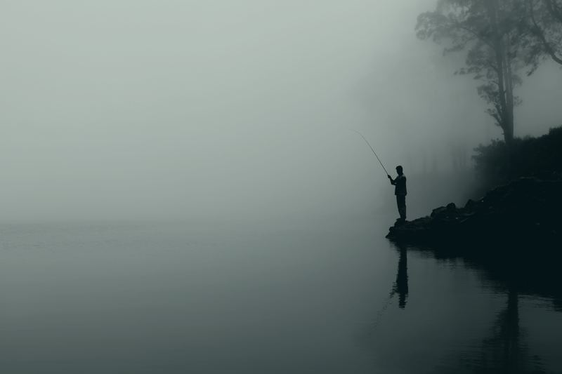
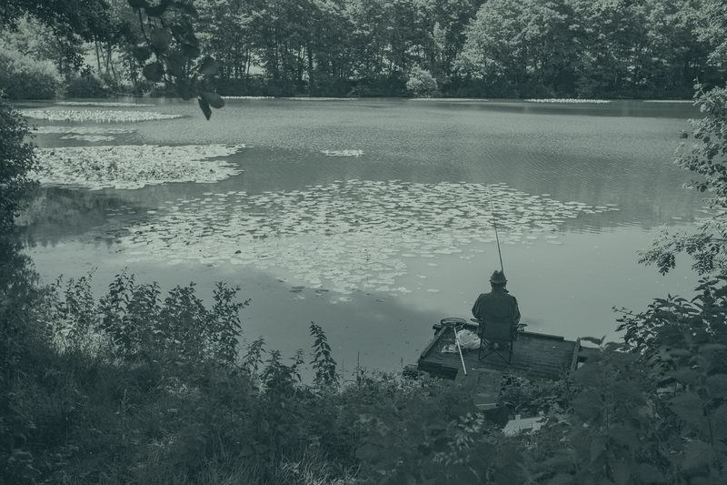

Štapovi i mašinice
Za početnike i za one koji tačno znaju šta traže.
Štapovi, mašinice, udice, mamci i hrana. Šulejićeva 96 — ocena 4,9 na Google mapama.
Radnim danom 8–16 h. Vikendom po dogovoru — samo pozovi.
Radnja radi radnim danom od 8 do 16. Ribolovci kreću vikendom i u zoru — zato otvaramo i van radnog vremena, po dogovoru telefonom.
Od udice do stolice — oprema za pecanje na jednom mestu, uz savet pri izboru.
Za početnike i za one koji tačno znaju šta traže.
Razne veličine udica i debljine najlona.
Plovci, olova, kutije i držači.
Mamci i hrana za ribu.
Stolice, torbe, kofe i mreže.
Čizme, odeća i prsluci za spasavanje.
Nisi siguran šta ti treba? Pozovi — pomoći ćemo pri izboru.
Zbog ovoga se ustaje u pet.



„Svim kolegama ribolovcima preporučujem kupovinu u radnji FISHING SPORT. Vrlo dobro snabdevena radnja."
Dalibor Damnjanović · Google mape
„Ljubaznost i širok asortiman opreme i hrane za ljubitelje pecanja."
Zlatan Ilić · Google mape
„Lepo opremljena ribolovačka radnja. Kvalitetni proizvodi i pristupačne cene."
Đorđe Zarić · Google mape
Pon–pet 8–16 · vikend po dogovoru
Dostupna — pitaj telefonom